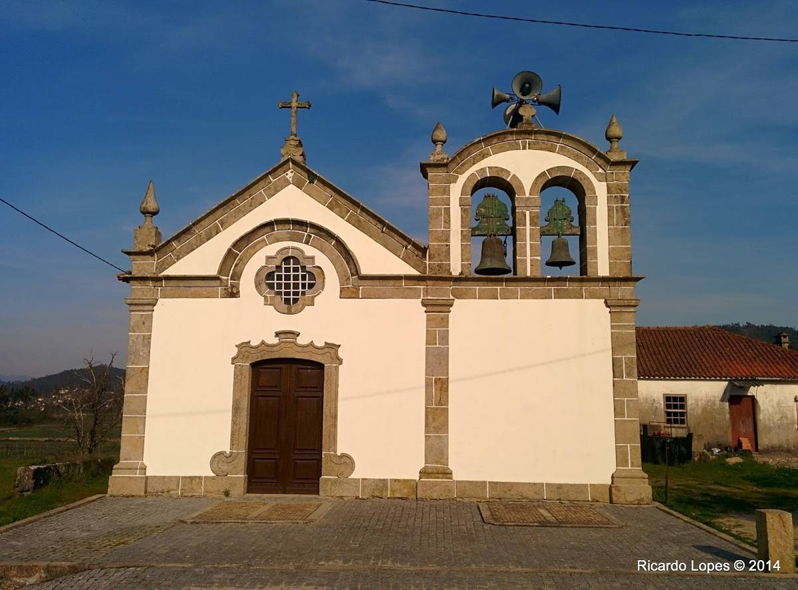

Aborim
Churches and Chapels
 Church of Nossa Senhora de Fátima
Church of Nossa Senhora de Fátima
The Church of Igreja Nossa Senhora de Fátima located in the town of Aborim municipality of Barcelos, Braga district, in Portugal.
Learn more >

Matriz Church of Aborim
The Matrix Church of Aborim located in the parish of Aborim, municipality of Barcelos, Braga district, in Portugal.
Learn more >
About this parish
| Administration | |
| Type: | The Parish Council |
| President: | (PS) |
| Demography | |
| Area | |
| Total: | 6,18km2 |
| Population (2011) | |
| Total: | 891 |
| Density: | 144,2hab/km2 |
| Other Information | |
| Website: | aborim.pt |
| Patron Saint: | São Martinho |
| Festivities | |
| Parish Day: | 13 of May |
Heraldry
Coat - Shield with red background, centered on a Miter decked white with three green gems on a gold band followed below by a rotation mill with eight rays and eight blades of gray. Silver mural crown with three towers. Listel white, with the legend in black: "ABORIM".
Flag - Yellow background. Cord and tassels of red and gold. Rod and cast gold.